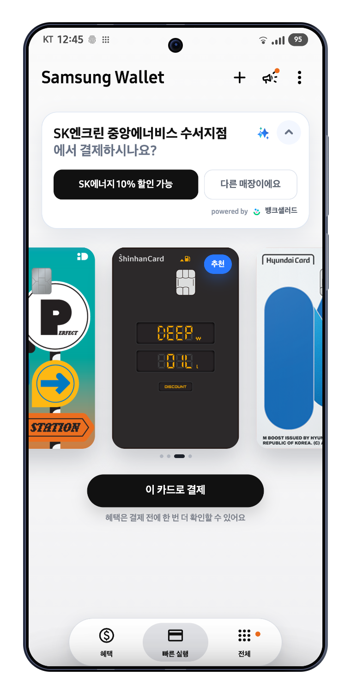
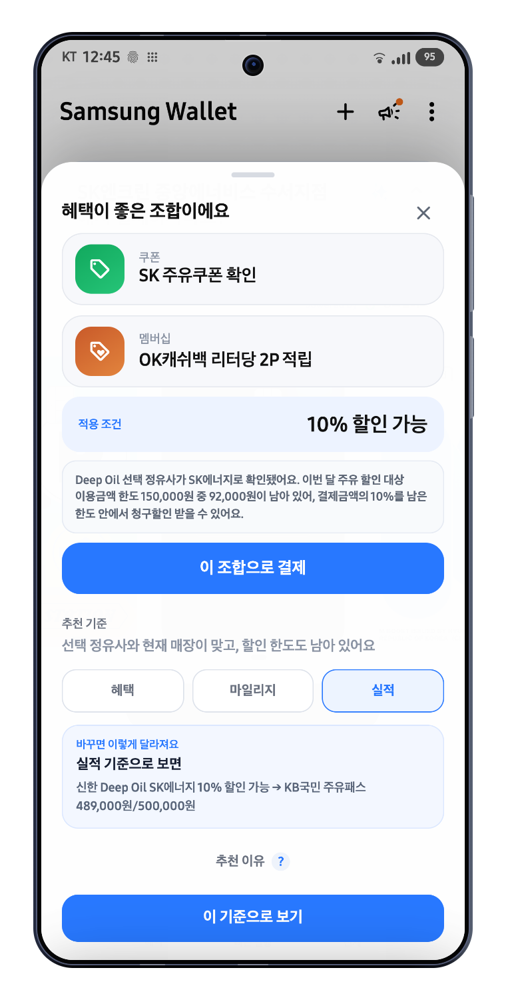
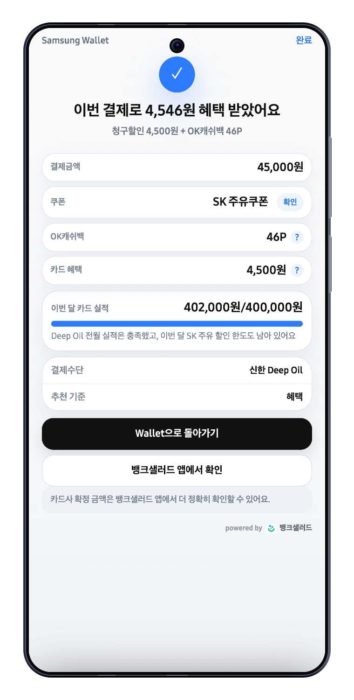
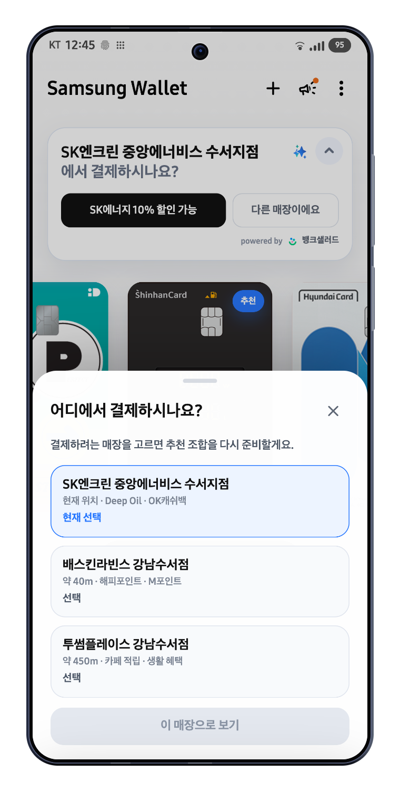
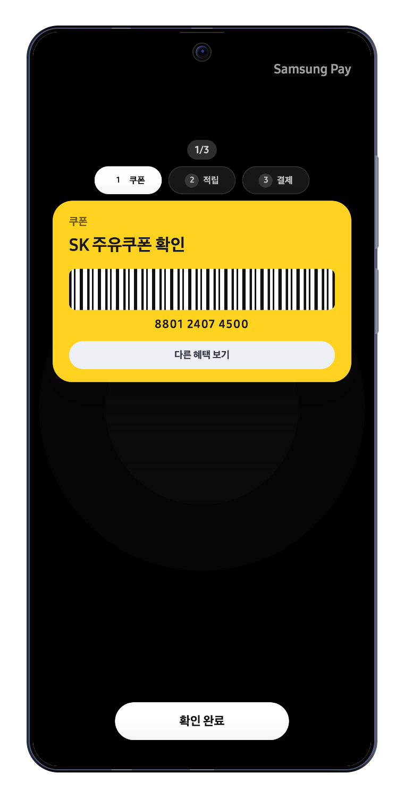
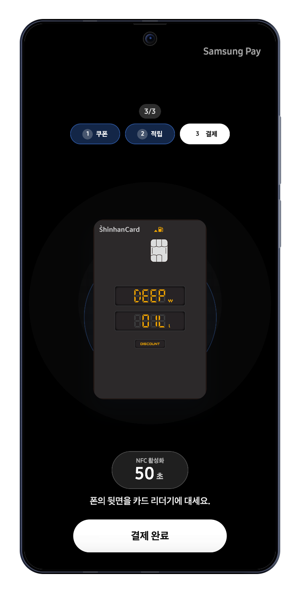
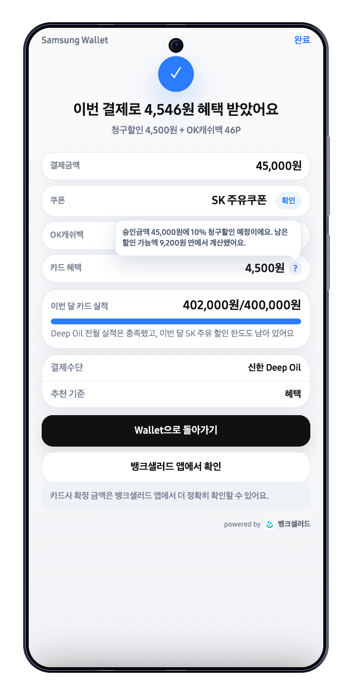

G
Galaxy AI
현재 사용자가 어떤 결제 맥락에 있는지 정리합니다.
- 매장 후보/업종 후보 생성
- Wallet 보유 자산 구조화
- 사용자 기준과 동의 상태 패키징
담당 범위: AI/추천 로직의 실체, 결제 전후 UX, MVP/실패 처리, 데모 화면 기반 Q&A.
금융 판단을 직접 하지 않습니다.
실적/한도/포인트 판단의 주체입니다.
확인, 수정, 결제, 결과 피드백을 담당합니다.
금융 계산이 아니라 context builder와 UX orchestration.
확정/가능/확인 필요를 분리하고 결제 전후 정보를 나눔.
주유소/F&B 중심, 등록 카드와 파트너 상태 정보부터 시작.
추천 보기, 위치 수정, 기준 변경, 결제 결과를 실제 UI로 방어.
현재 사용자가 어떤 결제 맥락에 있는지 정리합니다.
카드 실적, 한도, 포인트 기반의 금융 추천 콘텐츠를 생성합니다.
추천 콘텐츠를 계산대 앞에서 실행 가능한 행동으로 바꿉니다.
카드별 전월 실적, 이번 달 사용액, 잔여 할인 한도
포인트 잔액, 청구 예정 금액, 거래 이력 원천 데이터
뱅크샐러드가 자기 동의/라이선스 범위에서 추천 콘텐츠 생성
Wallet은 `powered by 뱅크샐러드`로 추천 주체를 명확히 노출
할인율, 잔여 한도, 쿠폰 조건, 포인트 사용 가능률을 금액/가치 기준으로 환산합니다.
혜택, 마일리지, 실적 채우기 중 사용자가 고른 기준에 따라 점수 구성이 달라집니다.
매장 인식 불확실, MCC 제외 가능성, 선택형 혜택 미확인은 순위를 낮추거나 확인 필요로 둡니다.
카드별 조건 분기와 결제 전/후 분리를 보여주기 위한 값입니다.
“이미 API로 정확히 계산됩니다”는 서비스화 리스크를 키웁니다.
확정, 가능, 확인 필요를 화면 상태와 데이터 원천에 연결합니다.
“SK에너지 10% 할인 가능”
“주유 할인 한도 92,000원 남음”
“4,500원 할인 확정”
“가장 좋은 카드입니다”
“승인금액 45,000원 기준 청구할인 예정”
“최종 적용은 카드사 기준으로 확인할 수 있어요”
파트너 데이터 또는 Wallet 보유 자산으로 확인 가능한 조건입니다.
공개 약관/보유 정보상 적용 가능성이 높지만 결제 후 확정됩니다.
선택 정유사, MCC 제외, 카드사 설정처럼 최종 조건 확인이 필요합니다.
업종 불일치, 한도 소진, 포인트 부족처럼 추천에서 제외할 조건입니다.

기존 카드 결제 버튼을 유지해 추천이 결제를 가로막지 않음.

기준을 누르는 즉시 카드가 바뀌지 않고 사용자가 적용해야 반영.

청구할인/실적 확정은 카드사 기준임을 노출.

대표 매장명을 제안하되 `에서 결제하시나요?`처럼 확인형 문구로 표시합니다.
근처 매장 후보를 보여주고, 사용자가 선택해야 추천 조합이 바뀝니다.
브랜드 혜택 대신 범용 카드/업종 추천으로 낮추고 오추천 리스크를 줄입니다.
오인식 수정은 다음 후보 정렬의 단말 내 선호 신호로 반영합니다.

계산대에서 실제로 말하고 보여줘야 하는 순서대로 제시.

AI가 결제를 대신하지 않고 기존 Samsung Pay 승인 흐름 유지.

결제 후 앱 이동은 실패가 아니라 최종 확정 책임 경계 표시.
주유소/F&B/편의점 중심. 등록 카드, 공개 혜택, 파트너 실적/한도 일부 연동.
쿠폰 잔액, 멤버십 사용 확정, 카드사/브랜드 API 연동.
사용자 선택 이력, 오인식 수정, 선호 기준을 단말 중심으로 학습.
추천을 열어 본 비율. 첫 화면 문구와 신뢰도 측정.
추천 조합으로 결제한 비율. 로직 유용성 측정.
매장/기준 변경 비율. 오인식과 복잡도 측정.
추천 기능을 끈 비율. 결제 UX 침범 여부 측정.
추천 후 실제 Pay 결제로 이어진 비율.
결제까지 걸린 시간. 빠른 결제 훼손 여부 측정.
추천을 기다리게 하지 않고 기본 카드 결제로 진입합니다. 추천은 “확인 중”으로 낮춥니다.
선택형 혜택, MCC 제외, 실적 산입 불확실 항목은 `확인 필요`로 표시합니다.
추천 결과를 강제 적용하지 않고 후보 리스트에서 사용자가 직접 적용합니다.
승인금액 기준으로 다시 계산하고 최종 확정은 카드사/파트너 앱으로 연결합니다.
SWAP은 금융 데이터를 소유하려는 제안이 아니라, Galaxy가 가장 잘 아는 결제 순간을 파트너 추천과 Wallet 실행 UX로 연결하는 제안입니다.
Galaxy AI는 금융 판단이 아니라 결제 맥락을 만듭니다.
결제 전에는 조건을, 결제 후에는 승인금액 기준 결과를 보여줍니다.
모르는 조건은 `확인 필요`로 낮춰 신뢰를 지킵니다.
추천은 접기/수정/끄기 가능하며 기존 Samsung Pay 흐름을 유지합니다.
MVP는 반복 결제 업종에서 판단 비용 감소를 먼저 검증합니다.